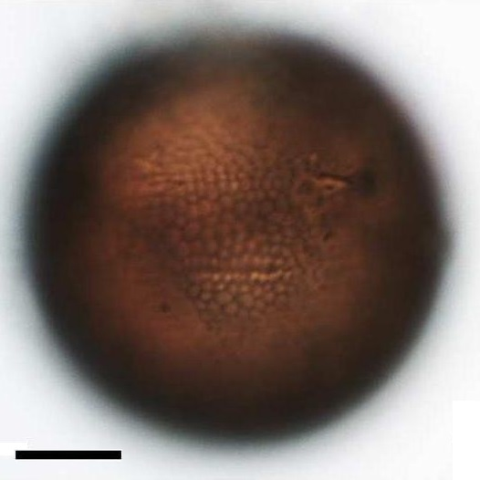
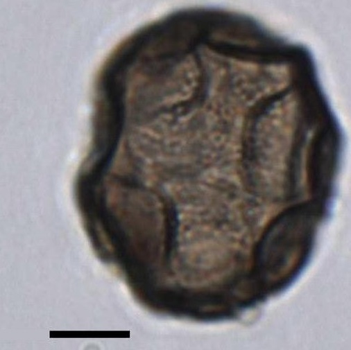
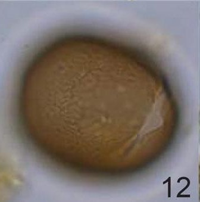
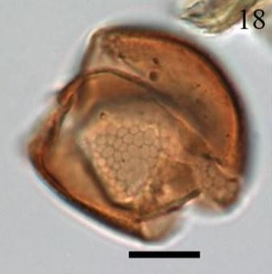
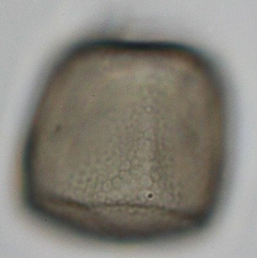

CYSTS LIST
- Alexandrium
- Archaeperidinium/RBSC
- Brigantedinium/Protoperidinium
- Diplopsalopsis/Protoperidinium
- Dubridinium
- Gymnodinium
- Impagidinium
- Lejeunecysta
- Nematosphaeropsis
- Peridinioids
- Polykrikos
- RBSC/Protoperidinium
- Selenopemphix
- Spiniferites
- Stelladinium
- Transparent/Hollow
- Transparent/Solid
- Transparent/Spherical
- Trinovantedinium
- Votadinium
GYMNODINIUM
Surface |
Shape |
Cingulum |
Remarks |
Species |
Central body (um.) |
Image |
ReticulateRed brown |
Spherical |
Bordered by two parallel rows of oriented vesicles |
More than 4 inner rows of vesiclesBigger |
Gymnodinium catenatum | 38 to 60 (D) |
 |
ReticulateDisplay irregular folds of the wall |
Polygonal in outlineContain large and irregular granules |
- |
Polygonal shapeIrregular folds of wall |
Gymnodinium inusitatum | 48 to 51 (L)38 to 41 (W) |
 |
MicroreticulatePale brown |
Spherical |
5 or 4 or less paravesicles rowsSmaller vesicles |
Pale brown colorSmaller vesicles |
Gymnodinium microreticulatum | 23 to 35 (D) |
 |
MicroreticulateRed brown |
Spherical |
2 to 4, usually 3, uneven rows of vesicles |
Less than 4 inner rows of vesiclesShorter |
Gymnodinium nolleri | 28 to 38 (D) |
 |
MicroreticulatePale to purple brown |
Elongate rectangular |
Rows of smaller vesicles |
TrapezoidalSubrectangular |
Gymnodinium trapeziforme | 26 to 34 (L)20 to 27 (W) |
 |